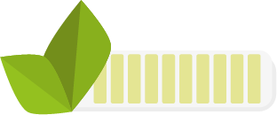

Welkom bij WATER ME,
Dit is een tamagotchi. Je kunt mij verzorgen door op de buttons te klikken. Let op de gezondheidsmeter onderaan, zo weet je of het goed met mij gaat.
Hieronder kun je zien hoe gezond je plant is
100/100
Oh nee, je plant is verdord.
Je hebt de plant niet goed genoeg verzorgd. Klik op opnieuw proberen voor een tweede kans.